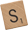

<!DOCTYPE html>
<html lang="en">
  <head>
    <meta charset="utf-8">
    <title>Synonyms for Awesome</title>
    <meta name="description" content="Make adjectives supercalifragilisticexpialidocious again.">
    <meta name="viewport" content="width=device-width, initial-scale=1">
    <meta http-equiv="X-UA-Compatible" content="IE=edge">
    <meta name="google-site-verification" content="7TUzoAEmOsSmvDyVP86CBrT3lvuvFYQTLkz7_fQyTsI">
    <link rel="stylesheet" href="css/awesome.css">
    <link rel="shortcut icon" href="img/favicon.ico">
    <link rel="preload" href="synonyms.txt" as="fetch">
    <script src="js/jquery-2.2.4.min.js"></script>
    <script src="js/awesome.js"></script>
  </head>
  <body>
    <div id="container">
      <span id="synonym"></span>
    </div>
    <div id="footer">
      <a href="https://jarv.is/" target="_blank" rel="noopener">
        <span>made with ❤️ by</span>
        
        <span>scrabble</span>
      </a>
    </div>
    <script>
      var _paq = _paq || [];
      _paq.push(['setRequestMethod', 'POST']);
      _paq.push(['setSecureCookie', true]);
      _paq.push(['trackPageView']);
      _paq.push(['enableLinkTracking']);
      _paq.push(['enableHeartBeatTimer']);
      (function() {
        var u='https://stats.jarv.is/';
        _paq.push(['setTrackerUrl', u+'send']);
        _paq.push(['setSiteId', '7']);
        var d=document, g=d.createElement('script'), s=d.getElementsByTagName('script')[0];
        g.async=true; g.defer=true; g.src=u+'stats.js'; s.parentNode.insertBefore(g,s);
      })();
    </script>
  </body>
</html>
